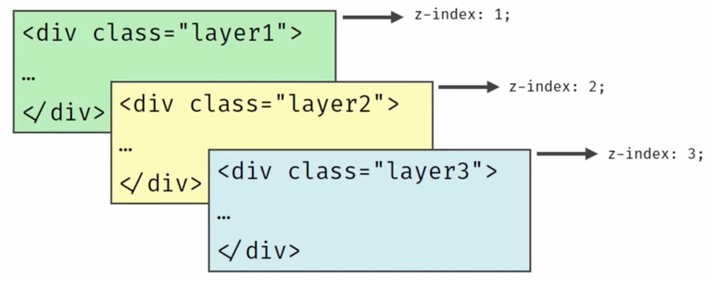

Доки ми не дізналися про позиційовані елементи, нам не доводилося стикатися з проблемами глибини. Ми розташовували елементи у двовимірній системі координат - x за горизонталлю та y за вертикаллю. Порядок відображення задавався виключно вкладеністю елементів - предок розташовувався внизу подібно до аркушу паперу, а нащадок - немов новий аркуш паперу, який лягає зверху.
Позиційовані елементи поводяться по-іншому. Вони випадають з потоку, а значить для них потрібне правило, яке буде визначати, який елемент знаходиться вище, а який нижче на осі z - перпендикулярно до площини екрану.
Це правило задає властивість z-index, яке контролює глибину (порядок) позиціонованих елементів на сторінці по осі z - від очей користувача і до екрану. Значеннями може бути будь-яке ціле число, зокрема й від'ємне.

Правила застосування
Спільний предок позиціонованих елементів створює контекст (stacking context) - область, в якій властивість z-index елемента впливає на інші елементи з z-index. Що більше значення z-index всередині цього контексту, то вище розташовується елемент.
Мінімальне (навіть від'ємне) значення z-index говорить про те, що інші елементи за межами потоку будуть вище цього елемента. Якщо у двох елементів однакові значення z-index, вище буде елемент оголошений останнім в HTML-коді.
Багато правил, а насправді все дуже просто. У прикладі, div.container з відносним позиціонуванням - це спільний предок для чотирьох div.box, які позиціоновані у ньому абсолютно. Використовуючи властивість z-index, можна змінити їх порядок відображення на осі z.
See the Pen lesson-09-z-index by goit-academy (@goit-academy) on CodePen.